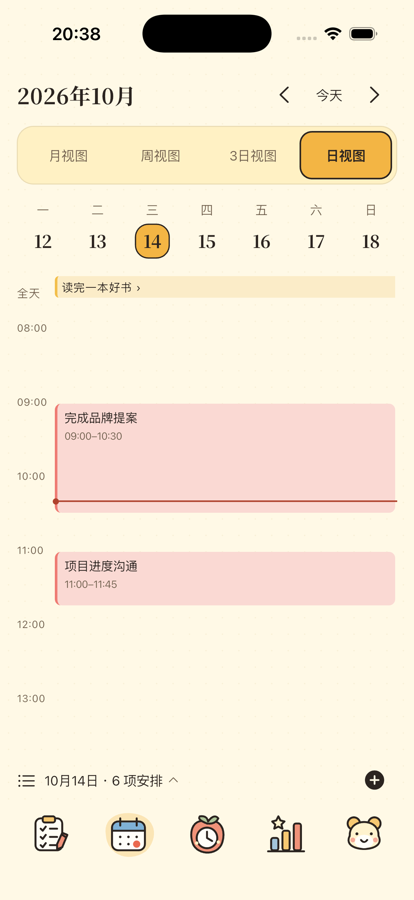
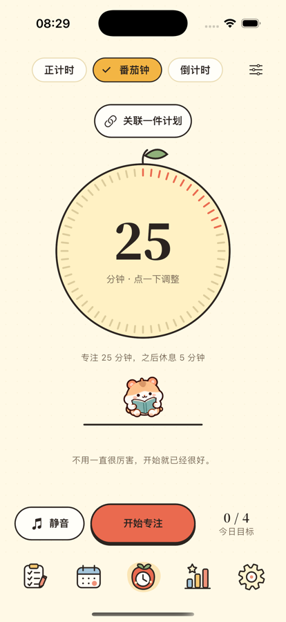

陪你把重要的事，
慢慢做完。
把纷乱的待办放进四象限，给眼前的一件事留一点专注。日历、备忘录与倒数日，也都在团团的小小日常里。
为 iPhone 与 iPad 设计 · 正在准备上架

今天，也一起慢慢来。
从一件小事开始
安排事情，留出时间，也给自己一点陪伴。

把事情，放到合适的位置。
四象限帮你分清重要与紧急；时间轴和日历把今天、这一周与接下来的安排连起来。支持重复计划、子计划和本地提醒。
把值得记住的日子收好。
用备忘录留住想法，用倒数日等待生日和纪念日。iOS 17 及以上可添加计划、日历、专注、倒数日和备忘录桌面小组件。
这段时间，只做眼前的事。
番茄钟、倒计时与正计时，配上雨声、炉火或旧书店。四位小伙伴陪你开始，也陪你适时休息。


你的日常，由你保管。
不登录也能使用本机功能。云备份由你主动发起，使用分析默认关闭；你可以随时查看隐私选择、导出内容或注销账号。
了解数据如何处理